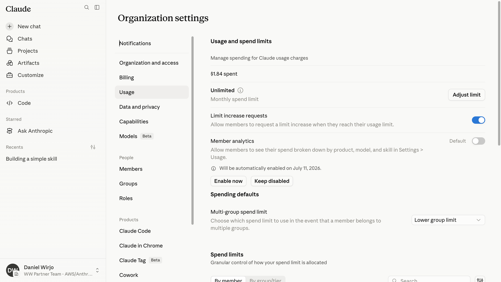
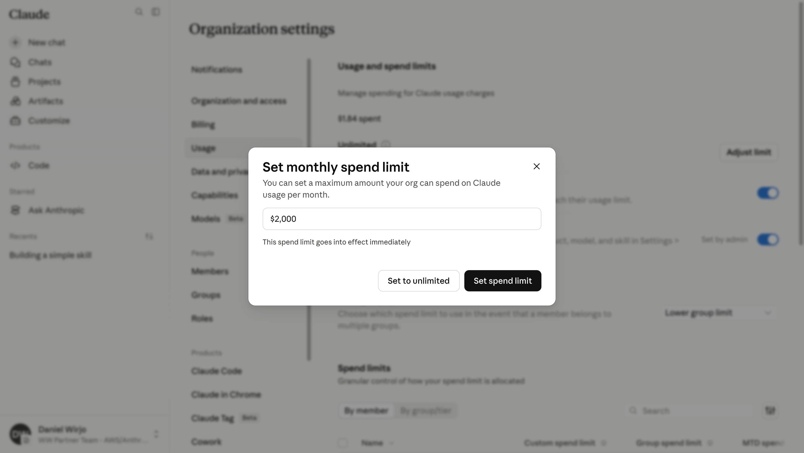
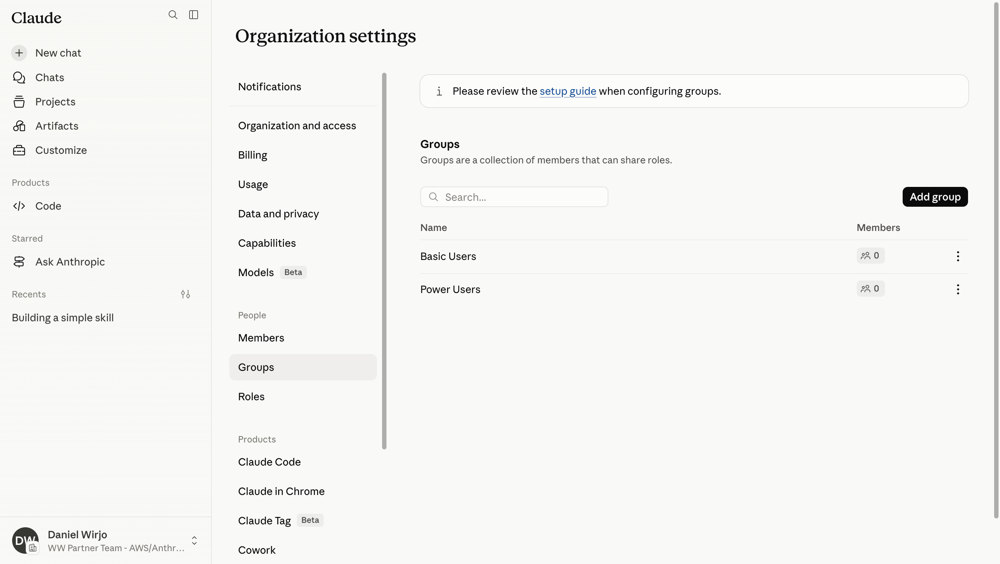
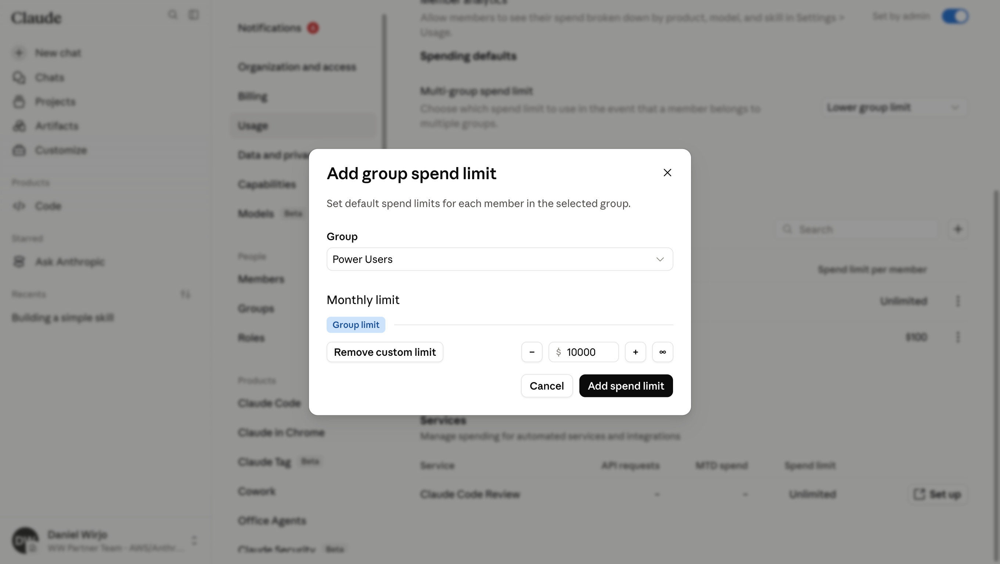
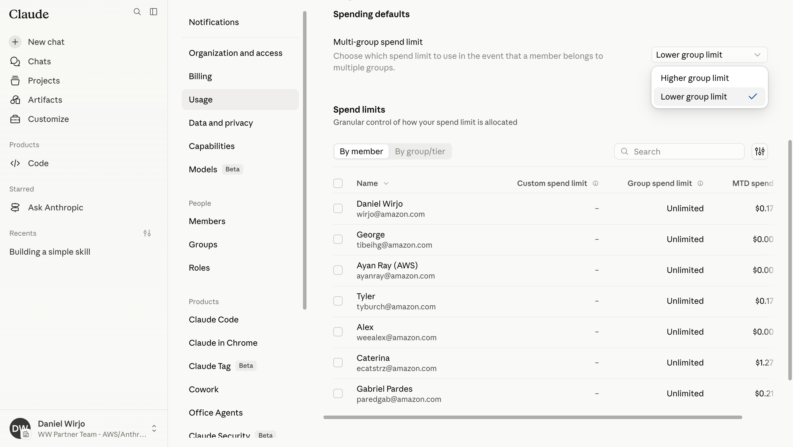
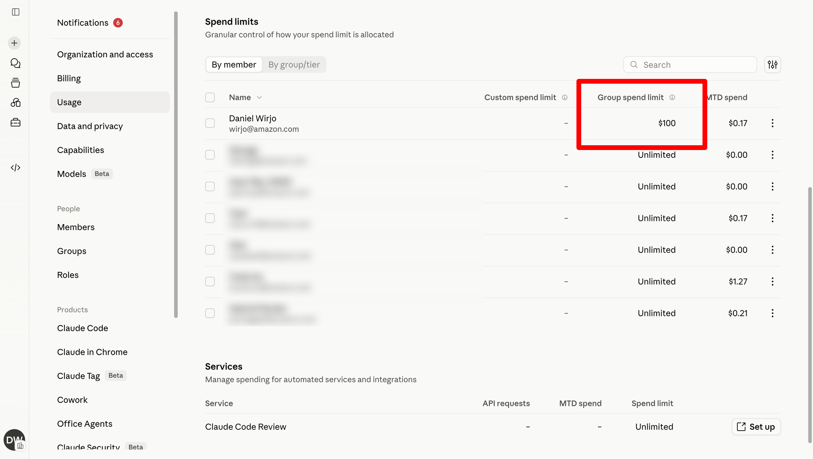
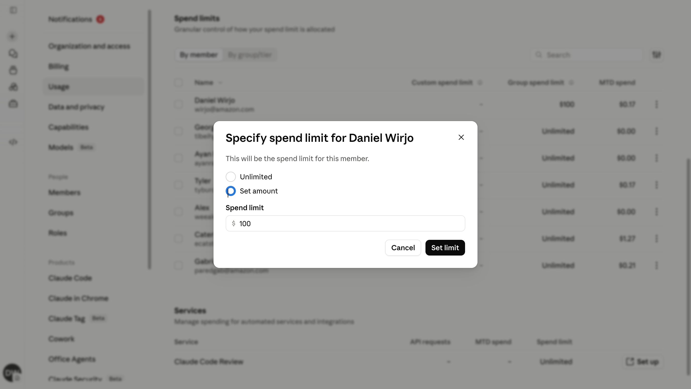

Spend controls and usage governance
Organization-wide caps, group-based tiers, and per-member overrides to manage Claude usage costs with precision
How do you scale Claude access without runaway costs?
What teams want
Unrestricted access to Claude for coding, research, and daily work — without waiting for approvals or hitting hard walls mid-task
What finance needs
Predictable monthly costs, per-team budgets that map to cost centres, and guardrails that prevent one runaway agent from consuming the entire commitment
Claude Enterprise delivers both — layered spend controls that give every team the right ceiling
What drives spend
Usage is measured in tokens. Different surfaces and models consume at very different rates.
Monthly planning estimates per member
| User tier | Chat | Code | Cowork |
|---|---|---|---|
| Power (top 10%) | $90 | $500 | $100 |
| Typical (mean) | $30 | $215 | $40 |
| Light (median) | $5 | $40 | $10 |
Source: Anthropic consumption guide. Rough planning estimates — actual usage varies by workflow.
Key cost drivers
Surface
Code and Cowork consume far more tokens than chat — system prompts, file context, tool calls, and multi-turn reasoning add up fast.
Model choice
Opus consumes several times more than Sonnet for the same task. Recommend Sonnet as the org default; reserve Opus for complex reasoning.
Effort level
Higher effort = more thorough responses but higher token consumption. Let users self-select, but set expectations.
Three layers of control
Organization
A single monthly cap for the entire org. Hard ceiling that prevents total spend from exceeding budget. Set to unlimited or a fixed dollar amount.
Group / tier
Per-member defaults inherited by group membership. Different ceilings for power users vs. casual users. Each member gets their own allocation, not a shared pool.
Member
Custom override for any individual. Takes precedence over group limits. Use for contractors, heavy users, or temporary project budgets.
Resolution order: custom member limit → group limit → organization default → unlimited
Organization-level controls
Set the overall monthly budget, enable member analytics, and control whether users can request limit increases
The Usage page is your spending command centre
Monthly spend limit
Set a hard cap or leave unlimited. Shows current MTD spend at a glance.
Limit increase requests
Allow members to request a higher limit when they reach their ceiling — keeps work flowing without bypassing controls.
Member analytics
Let members see their own spend broken down by product, model, and skill. Drives cost-awareness without admin intervention.

Set a monthly spending cap
Enter a dollar amount that takes effect immediately. When the org reaches this limit, all members are blocked from further usage until the next billing cycle or until an admin raises the cap.
Options
Set spend limit — hard cap at a specific dollar amount
Set to unlimited — no org-wide ceiling (rely on group/member limits instead)

Group-based controls
Create user groups that map to teams or tiers, then assign per-member spend ceilings to each group
Define groups that match your org structure
Groups are collections of members that share roles and spend limits. Map them to your cost centres, departments, or usage tiers.
Example tiers
Basic Users — casual users with lower monthly ceilings
Power Users — developers and agents with higher allocations
Each group's spend limit is per-member, not a shared pool. A group of 10 at $500/month means each member gets $500, not $50.

Set a per-member ceiling for the group
Select a group, then set the monthly limit each member of that group inherits. Use the infinity button to set unlimited, or remove a custom limit to fall back to the org default.
Controls available
Group limit — the default each member inherits
Remove custom limit — reverts to org-wide default
∞ button — sets unlimited for this group

What happens when a member is in multiple groups?
The "Multi-group spend limit" setting controls which group limit takes precedence.
Lower group limit (default)
The most restrictive group limit applies. Safer — prevents a high-limit group from overriding a deliberately constrained one.
Higher group limit
The most permissive group limit applies. Useful when groups represent entitlements — membership in a power-user group upgrades the ceiling.

Per-member controls
View spend at a glance and override limits for individual members when group defaults are not enough
See every member's limits and month-to-date spend in one view
The table shows custom spend limits (per-member overrides), group spend limits (inherited from group membership), and MTD spend. Filter by member or switch to the group/tier view.

Override any member's limit
Set a custom spend limit for a specific member. This takes precedence over their group limit — useful for contractors, heavy users during a sprint, or temporary project budgets.
Options
Unlimited — remove all caps for this member
Set amount — specify an exact dollar limit
Custom limits override group limits. Remove the custom limit to revert to the group default.

Spend governance best practices
01
Start with an org cap, then layer groups
Set a monthly org limit first as a safety net. Add group limits as you understand usage patterns across teams.
02
Enable member analytics
Let members see their own spend by product, model, and skill. Self-awareness reduces the need for admin intervention.
03
Use "lower group limit" for safety
When members belong to multiple groups, the lower limit prevents a high-privilege group from accidentally overriding a deliberate constraint.
04
Allow limit increase requests
Rather than setting generous defaults, start conservative and let members request increases. Creates an approval trail and surfaces usage needs.
Predictable costs without slowing teams down
Organization — a single monthly cap as the ultimate safety net
Groups — tiered per-member limits that map to your cost centres and usage patterns
Members — custom overrides for individual exceptions, with full MTD visibility
Claude Enterprise admin console: claude.ai/admin-settings → Usage